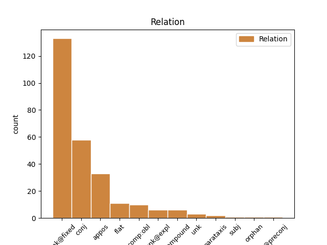
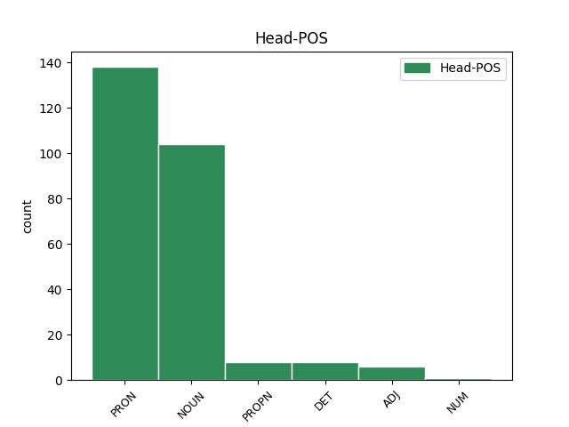
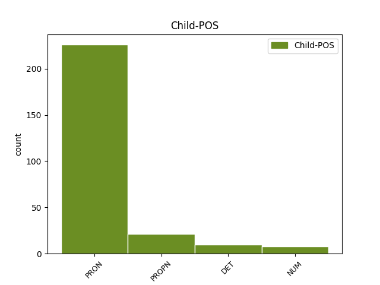

Distribution of features within this leaf



Agreement Rules sorted by frequency.
- When the dependent token is the unk@fixed(unk@fixed) of the head token, and the head token is PRON and the dependent token is PRON.
1 Liderii _ _ _ _ 0 _ _ _
2 României _ _ _ _ 0 _ _ _
3 postdecembriste _ _ _ _ 0 _ _ _
4 au _ _ _ _ 0 _ _ _
5 făcut _ _ _ _ 0 _ _ _
6 declarații _ _ _ _ 0 _ _ _
7 publice _ _ _ _ 0 _ _ _
8 în _ _ _ _ 0 _ _ _
9 ceea _ _ _ _ 0 _ _ _
10 ce _ _ _ _ 0 _ _ _
11 privește _ _ _ _ 0 _ _ _
12 strângerea _ _ _ _ 0 _ _ _
13 relațiilor _ _ _ _ 0 _ _ _
14 cu _ _ _ _ 0 _ _ _
15 alte _ _ _ _ 0 _ _ _
16 țări _ _ _ _ 0 _ _ _
17 europene _ _ _ _ 0 _ _ _
18 și _ _ _ _ 0 _ _ _
19 , _ _ _ _ 0 _ _ _
20 de _ _ _ _ 0 _ _ _
21 asemenea _ _ _ _ 0 _ _ _
22 , _ _ _ _ 0 _ _ _
23 în _ _ _ _ 0 _ _ _
24 ceea acela PRON Pd3fsr Case=Acc,Nom|Gender=Fem|Number=Sing|Person=3|PronType=Dem 0 _ _ _
25 ce ce PRON Pw3--r Case=Acc,Nom|Person=3|PronType=Int,Rel 24 unk@fixed _ _
26 privește _ _ _ _ 0 _ _ _
27 ajutorul _ _ _ _ 0 _ _ _
28 dat _ _ _ _ 0 _ _ _
29 acestora _ _ _ _ 0 _ _ _
30 în _ _ _ _ 0 _ _ _
31 procesul _ _ _ _ 0 _ _ _
32 integrării _ _ _ _ 0 _ _ _
33 euro-atlantice _ _ _ _ 0 _ _ _
34 , _ _ _ _ 0 _ _ _
35 în _ _ _ _ 0 _ _ _
36 special _ _ _ _ 0 _ _ _
37 în _ _ _ _ 0 _ _ _
38 cazul _ _ _ _ 0 _ _ _
39 Moldovei _ _ _ _ 0 _ _ _
40 , _ _ _ _ 0 _ _ _
41 Ucrainei _ _ _ _ 0 _ _ _
42 și _ _ _ _ 0 _ _ _
43 Georgiei _ _ _ _ 0 _ _ _
44 . _ _ _ _ 0 _ _ _
1 Alegând _ _ _ _ 0 _ _ _
2 pentru _ _ _ _ 0 _ _ _
3 fiecare _ _ _ _ 0 _ _ _
4 număr _ _ _ _ 0 _ _ _
5 fracția _ _ _ _ 0 _ _ _
6 ireductibilă _ _ _ _ 0 _ _ _
7 corespunzătoare _ _ _ _ 0 _ _ _
8 formăm _ _ _ _ 0 _ _ _
9 un _ _ _ _ 0 _ _ _
10 șir _ _ _ _ 0 _ _ _
11 punând _ _ _ _ 0 _ _ _
12 mai _ _ _ _ 0 _ _ _
13 întâi _ _ _ _ 0 _ _ _
14 fracțiile fracție NOUN Ncfpry Case=Acc,Nom|Definite=Def|Gender=Fem|Number=Plur 0 _ _ _
15 cu _ _ _ _ 0 _ _ _
16 suma _ _ _ _ 0 _ _ _
17 dintre _ _ _ _ 0 _ _ _
18 numărător _ _ _ _ 0 _ _ _
19 și _ _ _ _ 0 _ _ _
20 numitor _ _ _ _ 0 _ _ _
21 egală _ _ _ _ 0 _ _ _
22 cu _ _ _ _ 0 _ _ _
23 1 _ _ _ _ 0 _ _ _
24 , _ _ _ _ 0 _ _ _
25 apoi _ _ _ _ 0 _ _ _
26 cele acela PRON Pd3fpr Case=Acc,Nom|Gender=Fem|Number=Plur|Person=3|PronType=Dem 14 conj _ _
27 pentru _ _ _ _ 0 _ _ _
28 care _ _ _ _ 0 _ _ _
29 suma _ _ _ _ 0 _ _ _
30 este _ _ _ _ 0 _ _ _
31 2 _ _ _ _ 0 _ _ _
32 , _ _ _ _ 0 _ _ _
33 apoi _ _ _ _ 0 _ _ _
34 cele _ _ _ _ 0 _ _ _
35 pentru _ _ _ _ 0 _ _ _
36 care _ _ _ _ 0 _ _ _
37 suma _ _ _ _ 0 _ _ _
38 este _ _ _ _ 0 _ _ _
39 3 _ _ _ _ 0 _ _ _
40 , _ _ _ _ 0 _ _ _
41 etc. _ _ _ _ 0 _ _ _
1 Aici _ _ _ _ 0 _ _ _
2 funcționează _ _ _ _ 0 _ _ _
3 Universitatea universitate NOUN Ncfsry Case=Acc,Nom|Definite=Def|Gender=Fem|Number=Sing 0 _ _ _
4 Alexandru _ _ _ _ 0 _ _ _
5 Ioan _ _ _ _ 0 _ _ _
6 Cuza _ _ _ _ 0 _ _ _
7 , _ _ _ _ 0 _ _ _
8 una unul PRON Pi3fsr Case=Acc,Nom|Gender=Fem|Number=Sing|Person=3|PronType=Ind 3 appos _ _
9 din _ _ _ _ 0 _ _ _
10 cele _ _ _ _ 0 _ _ _
11 mai _ _ _ _ 0 _ _ _
12 prestigioase _ _ _ _ 0 _ _ _
13 instituții _ _ _ _ 0 _ _ _
14 academice _ _ _ _ 0 _ _ _
15 din _ _ _ _ 0 _ _ _
16 România _ _ _ _ 0 _ _ _
17 , _ _ _ _ 0 _ _ _
18 precum _ _ _ _ 0 _ _ _
19 și _ _ _ _ 0 _ _ _
20 alte _ _ _ _ 0 _ _ _
21 patru _ _ _ _ 0 _ _ _
22 universități _ _ _ _ 0 _ _ _
23 publice _ _ _ _ 0 _ _ _
24 și _ _ _ _ 0 _ _ _
25 șapte _ _ _ _ 0 _ _ _
26 particulare _ _ _ _ 0 _ _ _
27 . _ _ _ _ 0 _ _ _
1 Intensitatea _ _ _ _ 0 _ _ _
2 liniilor _ _ _ _ 0 _ _ _
3 spectrale _ _ _ _ 0 _ _ _
4 scade _ _ _ _ 0 _ _ _
5 treptat _ _ _ _ 0 _ _ _
6 pe _ _ _ _ 0 _ _ _
7 măsură măsură NOUN Ncfsrn Case=Acc,Nom|Definite=Ind|Gender=Fem|Number=Sing 0 _ _ _
8 ce ce PRON Pw3--r Case=Acc,Nom|Person=3|PronType=Int,Rel 7 unk@fixed _ _
9 se _ _ _ _ 0 _ _ _
10 micșorează _ _ _ _ 0 _ _ _
11 lungimea _ _ _ _ 0 _ _ _
12 de _ _ _ _ 0 _ _ _
13 undă _ _ _ _ 0 _ _ _
14 . _ _ _ _ 0 _ _ _
1 Pentru _ _ _ _ 0 _ _ _
2 a _ _ _ _ 0 _ _ _
3 ilustra _ _ _ _ 0 _ _ _
4 însă _ _ _ _ 0 _ _ _
5 diferența _ _ _ _ 0 _ _ _
6 dintre _ _ _ _ 0 _ _ _
7 probabilități _ _ _ _ 0 _ _ _
8 și _ _ _ _ 0 _ _ _
9 statistică _ _ _ _ 0 _ _ _
10 să _ _ _ _ 0 _ _ _
11 considerăm _ _ _ _ 0 _ _ _
12 două _ _ _ _ 0 _ _ _
13 urne _ _ _ _ 0 _ _ _
14 : _ _ _ _ 0 _ _ _
15 una unul PRON Pi3fsr Case=Acc,Nom|Gender=Fem|Number=Sing|Person=3|PronType=Ind 0 _ _ _
16 probabilistă _ _ _ _ 0 _ _ _
17 și _ _ _ _ 0 _ _ _
18 una unul PRON Pi3fsr Case=Acc,Nom|Gender=Fem|Number=Sing|Person=3|PronType=Ind 15 conj _ _
19 statistică _ _ _ _ 0 _ _ _
20 . _ _ _ _ 0 _ _ _
1 Mai _ _ _ _ 0 _ _ _
2 apoi _ _ _ _ 0 _ _ _
3 , _ _ _ _ 0 _ _ _
4 delegația _ _ _ _ 0 _ _ _
5 României _ _ _ _ 0 _ _ _
6 a _ _ _ _ 0 _ _ _
7 fost _ _ _ _ 0 _ _ _
8 prezentă _ _ _ _ 0 _ _ _
9 la _ _ _ _ 0 _ _ _
10 toate _ _ _ _ 0 _ _ _
11 edițiile _ _ _ _ 0 _ _ _
12 Jocurilor _ _ _ _ 0 _ _ _
13 Olimpice _ _ _ _ 0 _ _ _
14 începând _ _ _ _ 0 _ _ _
15 cu _ _ _ _ 0 _ _ _
16 anul _ _ _ _ 0 _ _ _
17 1924 _ _ _ _ 0 _ _ _
18 , _ _ _ _ 0 _ _ _
19 excepție _ _ _ _ 0 _ _ _
20 făcând _ _ _ _ 0 _ _ _
21 două _ _ _ _ 0 _ _ _
22 ediții _ _ _ _ 0 _ _ _
23 de _ _ _ _ 0 _ _ _
24 vară _ _ _ _ 0 _ _ _
25 , _ _ _ _ 0 _ _ _
26 cele _ _ _ _ 0 _ _ _
27 din _ _ _ _ 0 _ _ _
28 1932 _ _ _ _ 0 _ _ _
29 și _ _ _ _ 0 _ _ _
30 1948 _ _ _ _ 0 _ _ _
31 și _ _ _ _ 0 _ _ _
32 una unul PRON Pi3fsr Case=Acc,Nom|Gender=Fem|Number=Sing|Person=3|PronType=Ind 0 _ _ _
33 de _ _ _ _ 0 _ _ _
34 iarnă _ _ _ _ 0 _ _ _
35 , _ _ _ _ 0 _ _ _
36 cea acela PRON Pd3fsr Case=Acc,Nom|Gender=Fem|Number=Sing|Person=3|PronType=Dem 32 appos _ _
37 din _ _ _ _ 0 _ _ _
38 1960 _ _ _ _ 0 _ _ _
39 . _ _ _ _ 0 _ _ _
1 Liderii _ _ _ _ 0 _ _ _
2 României _ _ _ _ 0 _ _ _
3 postdecembriste _ _ _ _ 0 _ _ _
4 au _ _ _ _ 0 _ _ _
5 făcut _ _ _ _ 0 _ _ _
6 declarații _ _ _ _ 0 _ _ _
7 publice _ _ _ _ 0 _ _ _
8 în _ _ _ _ 0 _ _ _
9 ceea _ _ _ _ 0 _ _ _
10 ce _ _ _ _ 0 _ _ _
11 privește _ _ _ _ 0 _ _ _
12 strângerea _ _ _ _ 0 _ _ _
13 relațiilor _ _ _ _ 0 _ _ _
14 cu _ _ _ _ 0 _ _ _
15 alte _ _ _ _ 0 _ _ _
16 țări _ _ _ _ 0 _ _ _
17 europene _ _ _ _ 0 _ _ _
18 și _ _ _ _ 0 _ _ _
19 , _ _ _ _ 0 _ _ _
20 de _ _ _ _ 0 _ _ _
21 asemenea _ _ _ _ 0 _ _ _
22 , _ _ _ _ 0 _ _ _
23 în _ _ _ _ 0 _ _ _
24 ceea _ _ _ _ 0 _ _ _
25 ce _ _ _ _ 0 _ _ _
26 privește _ _ _ _ 0 _ _ _
27 ajutorul _ _ _ _ 0 _ _ _
28 dat _ _ _ _ 0 _ _ _
29 acestora _ _ _ _ 0 _ _ _
30 în _ _ _ _ 0 _ _ _
31 procesul _ _ _ _ 0 _ _ _
32 integrării _ _ _ _ 0 _ _ _
33 euro-atlantice _ _ _ _ 0 _ _ _
34 , _ _ _ _ 0 _ _ _
35 în _ _ _ _ 0 _ _ _
36 special _ _ _ _ 0 _ _ _
37 în _ _ _ _ 0 _ _ _
38 cazul _ _ _ _ 0 _ _ _
39 Moldovei Moldova PROPN Npfsoy Case=Dat,Gen|Definite=Def|Gender=Fem|Number=Sing 0 _ _ _
40 , _ _ _ _ 0 _ _ _
41 Ucrainei Ucraina PROPN Npfsoy Case=Dat,Gen|Definite=Def|Gender=Fem|Number=Sing 39 conj _ _
42 și _ _ _ _ 0 _ _ _
43 Georgiei _ _ _ _ 0 _ _ _
44 . _ _ _ _ 0 _ _ _
1 Nici _ _ _ _ 0 _ _ _
2 o un DET Tifsr Case=Acc,Nom|Gender=Fem|Number=Sing|PronType=Ind 0 _ _ _
3 mie mie NUM Mcfsrln Case=Acc,Nom|Definite=Ind|Gender=Fem|Number=Sing|NumForm=Word|NumType=Card 2 compound _ _
4 de _ _ _ _ 0 _ _ _
5 obuze _ _ _ _ 0 _ _ _
6 n- _ _ _ _ 0 _ _ _
7 ar _ _ _ _ 0 _ _ _
8 fi _ _ _ _ 0 _ _ _
9 putut _ _ _ _ 0 _ _ _
10 -o _ _ _ _ 0 _ _ _
11 dărâma _ _ _ _ 0 _ _ _
12 . _ _ _ _ 0 _ _ _
1 4 _ _ _ _ 0 _ _ _
2 Testul test NOUN Ncmsry Case=Acc,Nom|Definite=Def|Gender=Masc|Number=Sing 0 _ _ _
3 ( _ _ _ _ 0 _ _ _
4 ele el PRON Pp3fpr--------s Case=Acc,Nom|Gender=Fem|Number=Plur|Person=3|PronType=Prs|Strength=Strong 2 unk _ SpaceAfter=No
5 ) _ _ _ _ 0 _ _ _
6 efectuat _ _ _ _ 0 _ _ _
7 ( _ _ _ _ 0 _ _ _
8 e _ _ _ _ 0 _ _ _
9 ) _ _ _ _ 0 _ _ _
10 , _ _ _ _ 0 _ _ _
11 rezultatele _ _ _ _ 0 _ _ _
12 acestora _ _ _ _ 0 _ _ _
13 și _ _ _ _ 0 _ _ _
14 vaccinările _ _ _ _ 0 _ _ _
15 trebuie _ _ _ _ 0 _ _ _
16 înscrise _ _ _ _ 0 _ _ _
17 în _ _ _ _ 0 _ _ _
18 documentul _ _ _ _ 0 _ _ _
19 de _ _ _ _ 0 _ _ _
20 identificare _ _ _ _ 0 _ _ _
21 ( _ _ _ _ 0 _ _ _
22 pașaport _ _ _ _ 0 _ _ _
23 ) _ _ _ _ 0 _ _ _
24 . _ _ _ _ 0 _ _ _
1 ( _ _ _ _ 0 _ _ _
2 8 _ _ _ _ 0 _ _ _
3 ) _ _ _ _ 0 _ _ _
4 Decizia _ _ _ _ 0 _ _ _
5 Uniunii _ _ _ _ 0 _ _ _
6 Europene _ _ _ _ 0 _ _ _
7 de _ _ _ _ 0 _ _ _
8 a _ _ _ _ 0 _ _ _
9 încheia _ _ _ _ 0 _ _ _
10 operațiunea _ _ _ _ 0 _ _ _
11 este _ _ _ _ 0 _ _ _
12 luată _ _ _ _ 0 _ _ _
13 după _ _ _ _ 0 _ _ _
14 consultarea _ _ _ _ 0 _ _ _
15 Regatului regat NOUN Ncmsoy Case=Dat,Gen|Definite=Def|Gender=Masc|Number=Sing 0 _ _ _
16 Norvegiei Norvegia PROPN Npfsoy Case=Dat,Gen|Definite=Def|Gender=Fem|Number=Sing 15 flat _ SpaceAfter=No
17 , _ _ _ _ 0 _ _ _
18 cu _ _ _ _ 0 _ _ _
19 condiția _ _ _ _ 0 _ _ _
20 ca _ _ _ _ 0 _ _ _
21 acest _ _ _ _ 0 _ _ _
22 stat _ _ _ _ 0 _ _ _
23 să _ _ _ _ 0 _ _ _
24 mai _ _ _ _ 0 _ _ _
25 contribuie _ _ _ _ 0 _ _ _
26 încă _ _ _ _ 0 _ _ _
27 la _ _ _ _ 0 _ _ _
28 EUPOL _ _ _ _ 0 _ _ _
29 " _ _ _ _ 0 _ _ _
30 Proxima _ _ _ _ 0 _ _ _
31 " _ _ _ _ 0 _ _ _
32 la _ _ _ _ 0 _ _ _
33 data _ _ _ _ 0 _ _ _
34 încheierii _ _ _ _ 0 _ _ _
35 operațiunii _ _ _ _ 0 _ _ _
36 . _ _ _ _ 0 _ _ _
1 6 _ _ _ _ 0 _ _ _
2 . _ _ _ _ 0 _ _ _
3 ' _ _ _ _ 0 _ _ _
4 Grupuri _ _ _ _ 0 _ _ _
5 de _ _ _ _ 0 _ _ _
6 coreasigurare _ _ _ _ 0 _ _ _
7 ' _ _ _ _ 0 _ _ _
8 înseamnă _ _ _ _ 0 _ _ _
9 grupuri _ _ _ _ 0 _ _ _
10 constituite _ _ _ _ 0 _ _ _
11 de _ _ _ _ 0 _ _ _
12 societăți _ _ _ _ 0 _ _ _
13 de _ _ _ _ 0 _ _ _
14 asigurare _ _ _ _ 0 _ _ _
15 , _ _ _ _ 0 _ _ _
16 posibil _ _ _ _ 0 _ _ _
17 cu _ _ _ _ 0 _ _ _
18 ajutorul _ _ _ _ 0 _ _ _
19 uneia unul PRON Pi3fso Case=Dat,Gen|Gender=Fem|Number=Sing|Person=3|PronType=Ind 0 _ _ _
20 sau _ _ _ _ 0 _ _ _
21 a _ _ _ _ 0 _ _ _
22 mai _ _ _ _ 0 _ _ _
23 multor mult DET Di3-po---e Case=Dat,Gen|Number=Plur|Person=3|Position=Prenom|PronType=Ind 19 conj _ _
24 societăți _ _ _ _ 0 _ _ _
25 de _ _ _ _ 0 _ _ _
26 reasigurare _ _ _ _ 0 _ _ _
27 pentru _ _ _ _ 0 _ _ _
28 a- _ _ _ _ 0 _ _ _
29 și _ _ _ _ 0 _ _ _
30 reasigura _ _ _ _ 0 _ _ _
31 reciproc _ _ _ _ 0 _ _ _
32 , _ _ _ _ 0 _ _ _
33 integral _ _ _ _ 0 _ _ _
34 sau _ _ _ _ 0 _ _ _
35 parțial _ _ _ _ 0 _ _ _
36 , _ _ _ _ 0 _ _ _
37 obligațiile _ _ _ _ 0 _ _ _
38 pentru _ _ _ _ 0 _ _ _
39 o _ _ _ _ 0 _ _ _
40 anumită _ _ _ _ 0 _ _ _
41 categorie _ _ _ _ 0 _ _ _
42 de _ _ _ _ 0 _ _ _
43 riscuri _ _ _ _ 0 _ _ _
44 ; _ _ _ _ 0 _ _ _
1 Principalele _ _ _ _ 0 _ _ _
2 industrii _ _ _ _ 0 _ _ _
3 ale _ _ _ _ 0 _ _ _
4 României _ _ _ _ 0 _ _ _
5 sunt _ _ _ _ 0 _ _ _
6 cea _ _ _ _ 0 _ _ _
7 textilă _ _ _ _ 0 _ _ _
8 și _ _ _ _ 0 _ _ _
9 de _ _ _ _ 0 _ _ _
10 încălțăminte _ _ _ _ 0 _ _ _
11 , _ _ _ _ 0 _ _ _
12 industria _ _ _ _ 0 _ _ _
13 metalurgică _ _ _ _ 0 _ _ _
14 , _ _ _ _ 0 _ _ _
15 de _ _ _ _ 0 _ _ _
16 mașini _ _ _ _ 0 _ _ _
17 ușoare _ _ _ _ 0 _ _ _
18 și _ _ _ _ 0 _ _ _
19 de _ _ _ _ 0 _ _ _
20 ansamblare _ _ _ _ 0 _ _ _
21 de _ _ _ _ 0 _ _ _
22 mașini _ _ _ _ 0 _ _ _
23 , _ _ _ _ 0 _ _ _
24 minieră _ _ _ _ 0 _ _ _
25 , _ _ _ _ 0 _ _ _
26 de _ _ _ _ 0 _ _ _
27 prelucrare _ _ _ _ 0 _ _ _
28 a _ _ _ _ 0 _ _ _
29 lemnului _ _ _ _ 0 _ _ _
30 , _ _ _ _ 0 _ _ _
31 a _ _ _ _ 0 _ _ _
32 materialelor _ _ _ _ 0 _ _ _
33 de _ _ _ _ 0 _ _ _
34 construcții _ _ _ _ 0 _ _ _
35 , _ _ _ _ 0 _ _ _
36 chimică _ _ _ _ 0 _ _ _
37 , _ _ _ _ 0 _ _ _
38 alimentară alimentar ADJ Afpfsrn Case=Acc,Nom|Definite=Ind|Degree=Pos|Gender=Fem|Number=Sing 0 _ _ _
39 și _ _ _ _ 0 _ _ _
40 cea acela PRON Pd3fsr Case=Acc,Nom|Gender=Fem|Number=Sing|Person=3|PronType=Dem 38 conj _ _
41 de _ _ _ _ 0 _ _ _
42 rafinare _ _ _ _ 0 _ _ _
43 a _ _ _ _ 0 _ _ _
44 petrolului _ _ _ _ 0 _ _ _
45 . _ _ _ _ 0 _ _ _
1 După _ _ _ _ 0 _ _ _
2 ce _ _ _ _ 0 _ _ _
3 a _ _ _ _ 0 _ _ _
4 aflat _ _ _ _ 0 _ _ _
5 Brâncovanul _ _ _ _ 0 _ _ _
6 vodă _ _ _ _ 0 _ _ _
7 pe _ _ _ _ 0 _ _ _
8 aga agă NOUN Ncmsry Case=Acc,Nom|Definite=Def|Gender=Masc|Number=Sing 0 _ _ _
9 Bălăceanul Bălăcean PROPN Npmsry Case=Acc,Nom|Definite=Def|Gender=Masc|Number=Sing 8 appos _ _
10 mort _ _ _ _ 0 _ _ _
11 în _ _ _ _ 0 _ _ _
12 război _ _ _ _ 0 _ _ _
13 , _ _ _ _ 0 _ _ _
14 a _ _ _ _ 0 _ _ _
15 trimis _ _ _ _ 0 _ _ _
16 capul _ _ _ _ 0 _ _ _
17 la _ _ _ _ 0 _ _ _
18 București _ _ _ _ 0 _ _ _
19 . _ _ _ _ 0 _ _ _
1 Se _ _ _ _ 0 _ _ _
2 găseau _ _ _ _ 0 _ _ _
3 întotdeauna _ _ _ _ 0 _ _ _
4 alți alt DET Di3mpr---e Case=Acc,Nom|Gender=Masc|Number=Plur|Person=3|Position=Prenom|PronType=Ind 0 _ _ _
5 și _ _ _ _ 0 _ _ _
6 alți alt DET Di3mpr---e Case=Acc,Nom|Gender=Masc|Number=Plur|Person=3|Position=Prenom|PronType=Ind 4 conj _ _
7 naivi _ _ _ _ 0 _ _ _
8 care _ _ _ _ 0 _ _ _
9 erau _ _ _ _ 0 _ _ _
10 seduși _ _ _ _ 0 _ _ _
11 de _ _ _ _ 0 _ _ _
12 el _ _ _ _ 0 _ _ _
13 . _ _ _ _ 0 _ _ _
1 Tragismul _ _ _ _ 0 _ _ _
2 , _ _ _ _ 0 _ _ _
3 așa _ _ _ _ 0 _ _ _
4 cum _ _ _ _ 0 _ _ _
5 îl _ _ _ _ 0 _ _ _
6 vedea _ _ _ _ 0 _ _ _
7 el _ _ _ _ 0 _ _ _
8 , _ _ _ _ 0 _ _ _
9 ținea _ _ _ _ 0 _ _ _
10 de _ _ _ _ 0 _ _ _
11 niște _ _ _ _ 0 _ _ _
12 vremuri _ _ _ _ 0 _ _ _
13 îndepărtate _ _ _ _ 0 _ _ _
14 , _ _ _ _ 0 _ _ _
15 de _ _ _ _ 0 _ _ _
16 un _ _ _ _ 0 _ _ _
17 trecut _ _ _ _ 0 _ _ _
18 în _ _ _ _ 0 _ _ _
19 care _ _ _ _ 0 _ _ _
20 mai _ _ _ _ 0 _ _ _
21 existau _ _ _ _ 0 _ _ _
22 viața _ _ _ _ 0 _ _ _
23 particulară _ _ _ _ 0 _ _ _
24 , _ _ _ _ 0 _ _ _
25 dragostea _ _ _ _ 0 _ _ _
26 și _ _ _ _ 0 _ _ _
27 prietenia _ _ _ _ 0 _ _ _
28 , _ _ _ _ 0 _ _ _
29 în _ _ _ _ 0 _ _ _
30 care _ _ _ _ 0 _ _ _
31 membrii membru NOUN Ncmpry Case=Acc,Nom|Definite=Def|Gender=Masc|Number=Plur 0 _ _ _
32 unei _ _ _ _ 0 _ _ _
33 familii _ _ _ _ 0 _ _ _
34 stăteau _ _ _ _ 0 _ _ _
35 alături _ _ _ _ 0 _ _ _
36 unul unul PRON Pi3msr Case=Acc,Nom|Gender=Masc|Number=Sing|Person=3|PronType=Ind 31 unk@expl _ _
37 de _ _ _ _ 0 _ _ _
38 altul _ _ _ _ 0 _ _ _
39 , _ _ _ _ 0 _ _ _
40 fără _ _ _ _ 0 _ _ _
41 să _ _ _ _ 0 _ _ _
42 aibă _ _ _ _ 0 _ _ _
43 nevoie _ _ _ _ 0 _ _ _
44 să _ _ _ _ 0 _ _ _
45 știe _ _ _ _ 0 _ _ _
46 de _ _ _ _ 0 _ _ _
47 ce _ _ _ _ 0 _ _ _
48 . _ _ _ _ 0 _ _ _
1 De _ _ _ _ 0 _ _ _
2 asemenea _ _ _ _ 0 _ _ _
3 , _ _ _ _ 0 _ _ _
4 Comisia _ _ _ _ 0 _ _ _
5 a _ _ _ _ 0 _ _ _
6 adresat _ _ _ _ 0 _ _ _
7 solicitări _ _ _ _ 0 _ _ _
8 specifice _ _ _ _ 0 _ _ _
9 Statelor stat NOUN Ncfpoy Case=Dat,Gen|Definite=Def|Gender=Fem|Number=Plur 0 _ _ _
10 Unite _ _ _ _ 0 _ _ _
11 ale _ _ _ _ 0 _ _ _
12 Americii _ _ _ _ 0 _ _ _
13 , _ _ _ _ 0 _ _ _
14 Canadei Canada PROPN Npfsoy Case=Dat,Gen|Definite=Def|Gender=Fem|Number=Sing 9 conj _ SpaceAfter=No
15 , _ _ _ _ 0 _ _ _
16 precum _ _ _ _ 0 _ _ _
17 și _ _ _ _ 0 _ _ _
18 altor _ _ _ _ 0 _ _ _
19 țări _ _ _ _ 0 _ _ _
20 terțe _ _ _ _ 0 _ _ _
21 care _ _ _ _ 0 _ _ _
22 autorizează _ _ _ _ 0 _ _ _
23 utilizarea _ _ _ _ 0 _ _ _
24 acestor _ _ _ _ 0 _ _ _
25 șase _ _ _ _ 0 _ _ _
26 hormoni _ _ _ _ 0 _ _ _
27 pentru _ _ _ _ 0 _ _ _
28 stimularea _ _ _ _ 0 _ _ _
29 creșterii _ _ _ _ 0 _ _ _
30 la _ _ _ _ 0 _ _ _
31 animale _ _ _ _ 0 _ _ _
32 și _ _ _ _ 0 _ _ _
33 a _ _ _ _ 0 _ _ _
34 publicat _ _ _ _ 0 _ _ _
35 un _ _ _ _ 0 _ _ _
36 apel _ _ _ _ 0 _ _ _
37 , _ _ _ _ 0 _ _ _
38 cerând _ _ _ _ 0 _ _ _
39 tuturor _ _ _ _ 0 _ _ _
40 părților _ _ _ _ 0 _ _ _
41 interesate _ _ _ _ 0 _ _ _
42 , _ _ _ _ 0 _ _ _
43 inclusiv _ _ _ _ 0 _ _ _
44 industriei _ _ _ _ 0 _ _ _
45 , _ _ _ _ 0 _ _ _
46 să _ _ _ _ 0 _ _ _
47 -i _ _ _ _ 0 _ _ _
48 pună _ _ _ _ 0 _ _ _
49 la _ _ _ _ 0 _ _ _
50 dispoziție _ _ _ _ 0 _ _ _
51 datele _ _ _ _ 0 _ _ _
52 și _ _ _ _ 0 _ _ _
53 informațiile _ _ _ _ 0 _ _ _
54 științifice _ _ _ _ 0 _ _ _
55 pertinente _ _ _ _ 0 _ _ _
56 și _ _ _ _ 0 _ _ _
57 recente _ _ _ _ 0 _ _ _
58 pe _ _ _ _ 0 _ _ _
59 care _ _ _ _ 0 _ _ _
60 le _ _ _ _ 0 _ _ _
61 dețin _ _ _ _ 0 _ _ _
62 , _ _ _ _ 0 _ _ _
63 pentru _ _ _ _ 0 _ _ _
64 a _ _ _ _ 0 _ _ _
65 fi _ _ _ _ 0 _ _ _
66 luate _ _ _ _ 0 _ _ _
67 în _ _ _ _ 0 _ _ _
68 considerare _ _ _ _ 0 _ _ _
69 în _ _ _ _ 0 _ _ _
70 cadrul _ _ _ _ 0 _ _ _
71 evaluării _ _ _ _ 0 _ _ _
72 suplimentare _ _ _ _ 0 _ _ _
73 a _ _ _ _ 0 _ _ _
74 riscurilor _ _ _ _ 0 _ _ _
75 . _ _ _ _ 0 _ _ _
1 Totuși _ _ _ _ 0 _ _ _
2 , _ _ _ _ 0 _ _ _
3 astfel _ _ _ _ 0 _ _ _
4 de _ _ _ _ 0 _ _ _
5 grupuri _ _ _ _ 0 _ _ _
6 pot _ _ _ _ 0 _ _ _
7 duce _ _ _ _ 0 _ _ _
8 la _ _ _ _ 0 _ _ _
9 restricționarea _ _ _ _ 0 _ _ _
10 concurenței _ _ _ _ 0 _ _ _
11 , _ _ _ _ 0 _ _ _
12 cum _ _ _ _ 0 _ _ _
13 ar _ _ _ _ 0 _ _ _
14 fi _ _ _ _ 0 _ _ _
15 standardizarea _ _ _ _ 0 _ _ _
16 condițiilor _ _ _ _ 0 _ _ _
17 polițelor _ _ _ _ 0 _ _ _
18 și _ _ _ _ 0 _ _ _
19 chiar _ _ _ _ 0 _ _ _
20 a _ _ _ _ 0 _ _ _
21 valorii valoare NOUN Ncfsoy Case=Dat,Gen|Definite=Def|Gender=Fem|Number=Sing 0 _ _ _
22 acoperirii _ _ _ _ 0 _ _ _
23 și _ _ _ _ 0 _ _ _
24 a _ _ _ _ 0 _ _ _
25 primelor prim NUM Mofpoly Case=Dat,Gen|Definite=Def|Gender=Fem|Number=Plur|NumForm=Word|NumType=Ord 21 conj _ SpaceAfter=No
26 . _ _ _ _ 0 _ _ _
1 Mutațiile mutație NOUN Ncfpry Case=Acc,Nom|Definite=Def|Gender=Fem|Number=Plur 0 _ _ _
2 asociate _ _ _ _ 0 _ _ _
3 cu _ _ _ _ 0 _ _ _
4 rezistența _ _ _ _ 0 _ _ _
5 tind _ _ _ _ 0 _ _ _
6 a _ _ _ _ 0 _ _ _
7 fi _ _ _ _ 0 _ _ _
8 specifice _ _ _ _ 0 _ _ _
9 sub _ _ _ _ 0 _ _ _
10 - _ _ _ _ 0 _ _ _
11 tipului _ _ _ _ 0 _ _ _
12 viral _ _ _ _ 0 _ _ _
13 ( _ _ _ _ 0 _ _ _
14 inclusiv _ _ _ _ 0 _ _ _
15 cele acela PRON Pd3fpr Case=Acc,Nom|Gender=Fem|Number=Plur|Person=3|PronType=Dem 1 parataxis _ _
16 descoperite _ _ _ _ 0 _ _ _
17 în _ _ _ _ 0 _ _ _
18 variantele _ _ _ _ 0 _ _ _
19 H5N1 _ _ _ _ 0 _ _ _
20 ) _ _ _ _ 0 _ _ _
21 . _ _ _ _ 0 _ _ _
1 Vă _ _ _ _ 0 _ _ _
2 rugăm _ _ _ _ 0 _ _ _
3 să _ _ _ _ 0 _ _ _
4 rețineți _ _ _ _ 0 _ _ _
5 că _ _ _ _ 0 _ _ _
6 nu _ _ _ _ 0 _ _ _
7 puteți _ _ _ _ 0 _ _ _
8 utiliza _ _ _ _ 0 _ _ _
9 Xigris _ _ _ _ 0 _ _ _
10 din _ _ _ _ 0 _ _ _
11 proprie _ _ _ _ 0 _ _ _
12 inițiativă _ _ _ _ 0 _ _ _
13 , _ _ _ _ 0 _ _ _
14 pentru _ _ _ _ 0 _ _ _
15 că _ _ _ _ 0 _ _ _
16 atât atât PRON Pi3msr Case=Acc,Nom|Gender=Masc|Number=Sing|Person=3|PronType=Ind 17 cc@preconj _ _
17 boala boală NOUN Ncfsry Case=Acc,Nom|Definite=Def|Gender=Fem|Number=Sing 0 _ _ _
18 dumneavoastră _ _ _ _ 0 _ _ _
19 , _ _ _ _ 0 _ _ _
20 cât _ _ _ _ 0 _ _ _
21 și _ _ _ _ 0 _ _ _
22 utilizarea _ _ _ _ 0 _ _ _
23 medicamentului _ _ _ _ 0 _ _ _
24 necesită _ _ _ _ 0 _ _ _
25 îngrijire _ _ _ _ 0 _ _ _
26 medicală _ _ _ _ 0 _ _ _
27 permanentă _ _ _ _ 0 _ _ _
28 . _ _ _ _ 0 _ _ _
1 ( _ _ _ _ 0 _ _ _
2 6 _ _ _ _ 0 _ _ _
3 ) _ _ _ _ 0 _ _ _
4 Aspectele _ _ _ _ 0 _ _ _
5 hotărârii _ _ _ _ 0 _ _ _
6 abordate _ _ _ _ 0 _ _ _
7 de _ _ _ _ 0 _ _ _
8 prezentul _ _ _ _ 0 _ _ _
9 regulament _ _ _ _ 0 _ _ _
10 sunt _ _ _ _ 0 _ _ _
11 stabilirea _ _ _ _ 0 _ _ _
12 marjei _ _ _ _ 0 _ _ _
13 de _ _ _ _ 0 _ _ _
14 dumping _ _ _ _ 0 _ _ _
15 pentru _ _ _ _ 0 _ _ _
16 Petrotub _ _ _ _ 0 _ _ _
17 SA _ _ _ _ 0 _ _ _
18 și _ _ _ _ 0 _ _ _
19 a _ _ _ _ 0 _ _ _
20 valorii _ _ _ _ 0 _ _ _
21 normale _ _ _ _ 0 _ _ _
22 pentru _ _ _ _ 0 _ _ _
23 Republica republică NOUN Ncfsry Case=Acc,Nom|Definite=Def|Gender=Fem|Number=Sing 0 _ _ _
24 SA său DET Ds3fsrs Case=Acc,Nom|Gender=Fem|Number=Sing|Number[psor]=Sing|Person=3|Poss=Yes|PronType=Prs 23 flat _ SpaceAfter=No
25 . _ _ _ _ 0 _ _ _
1 Ăsta _ _ _ _ 0 _ _ _
2 a _ _ _ _ 0 _ _ _
3 fost _ _ _ _ 0 _ _ _
4 negustor _ _ _ _ 0 _ _ _
5 , _ _ _ _ 0 _ _ _
6 ăsta acesta PRON Pd3msr Case=Acc,Nom|Gender=Masc|Number=Sing|Person=3|PronType=Dem 9 orphan _ orig_deprel=nsubj
7 judecător _ _ _ _ 0 _ _ _
8 , _ _ _ _ 0 _ _ _
9 ăsta acesta PRON Pd3msr Case=Acc,Nom|Gender=Masc|Number=Sing|Person=3|PronType=Dem 0 _ _ _
10 neam _ _ _ _ 0 _ _ _
11 prost _ _ _ _ 0 _ _ _
12 , _ _ _ _ 0 _ _ _
13 toți _ _ _ _ 0 _ _ _
14 în _ _ _ _ 0 _ _ _
15 piele _ _ _ _ 0 _ _ _
16 , _ _ _ _ 0 _ _ _
17 nu _ _ _ _ 0 _ _ _
18 se _ _ _ _ 0 _ _ _
19 mai _ _ _ _ 0 _ _ _
20 deosebesc _ _ _ _ 0 _ _ _
21 . _ _ _ _ 0 _ _ _
1 Dispariția _ _ _ _ 0 _ _ _
2 educației _ _ _ _ 0 _ _ _
3 de _ _ _ _ 0 _ _ _
4 calitate _ _ _ _ 0 _ _ _
5 , _ _ _ _ 0 _ _ _
6 cândva _ _ _ _ 0 _ _ _
7 bijuteria _ _ _ _ 0 _ _ _
8 din _ _ _ _ 0 _ _ _
9 coroana _ _ _ _ 0 _ _ _
10 Marii mare ADJ Afpfsoy Case=Dat,Gen|Definite=Def|Degree=Pos|Gender=Fem|Number=Sing 0 _ _ _
11 Britanii Britania PROPN Npfson Case=Dat,Gen|Definite=Ind|Gender=Fem|Number=Sing 10 flat _ SpaceAfter=No
12 , _ _ _ _ 0 _ _ _
13 a _ _ _ _ 0 _ _ _
14 fost _ _ _ _ 0 _ _ _
15 o _ _ _ _ 0 _ _ _
16 caracteristică _ _ _ _ 0 _ _ _
17 a _ _ _ _ 0 _ _ _
18 celor _ _ _ _ 0 _ _ _
19 trei _ _ _ _ 0 _ _ _
20 administrații _ _ _ _ 0 _ _ _
21 Conservatoare _ _ _ _ 0 _ _ _
22 din _ _ _ _ 0 _ _ _
23 1979 _ _ _ _ 0 _ _ _
24 . _ _ _ _ 0 _ _ _
1 Zăpada _ _ _ _ 0 _ _ _
2 se _ _ _ _ 0 _ _ _
3 depunea _ _ _ _ 0 _ _ _
4 pe _ _ _ _ 0 _ _ _
5 măsură măsură NOUN Ncfsrn Case=Acc,Nom|Definite=Ind|Gender=Fem|Number=Sing 0 _ _ _
6 ce ce DET Dw3--r---e Case=Acc,Nom|Person=3|Position=Prenom|PronType=Int,Rel 5 unk@fixed _ _
7 noapte _ _ _ _ 0 _ _ _
8 trecea _ _ _ _ 0 _ _ _
9 , _ _ _ _ 0 _ _ _
10 căzând _ _ _ _ 0 _ _ _
11 peste _ _ _ _ 0 _ _ _
12 culcușul _ _ _ _ 0 _ _ _
13 lor _ _ _ _ 0 _ _ _
14 și _ _ _ _ 0 _ _ _
15 șuierând _ _ _ _ 0 _ _ _
16 la _ _ _ _ 0 _ _ _
17 contactul _ _ _ _ 0 _ _ _
18 cu _ _ _ _ 0 _ _ _
19 focul _ _ _ _ 0 _ _ _
20 . _ _ _ _ 0 _ _ _
1 Nicolici _ _ _ _ 0 _ _ _
2 nu _ _ _ _ 0 _ _ _
3 măsura _ _ _ _ 0 _ _ _
4 mai _ _ _ _ 0 _ _ _
5 mult _ _ _ _ 0 _ _ _
6 de _ _ _ _ 0 _ _ _
7 unu unu NUM Mcmsrl Case=Acc,Nom|Gender=Masc|Number=Sing|NumForm=Word|NumType=Card 0 _ _ _
8 șaizeci _ _ _ _ 0 _ _ _
9 , _ _ _ _ 0 _ _ _
10 unu unu NUM Mcmsrl Case=Acc,Nom|Gender=Masc|Number=Sing|NumForm=Word|NumType=Card 7 conj _ _
11 șaizeci _ _ _ _ 0 _ _ _
12 și _ _ _ _ 0 _ _ _
13 doi _ _ _ _ 0 _ _ _
14 . _ _ _ _ 0 _ _ _
1 De _ _ _ _ 0 _ _ _
2 câte _ _ _ _ 0 _ _ _
3 ori _ _ _ _ 0 _ _ _
4 se _ _ _ _ 0 _ _ _
5 deschide _ _ _ _ 0 _ _ _
6 ușa _ _ _ _ 0 _ _ _
7 , _ _ _ _ 0 _ _ _
8 toate tot DET Di3fpr Case=Acc,Nom|Gender=Fem|Number=Plur|Person=3|PronType=Ind 0 _ _ _
9 capetele _ _ _ _ 0 _ _ _
10 , _ _ _ _ 0 _ _ _
11 dar _ _ _ _ 0 _ _ _
12 absolut _ _ _ _ 0 _ _ _
13 toate tot PRON Pi3fpr Case=Acc,Nom|Gender=Fem|Number=Plur|Person=3|PronType=Ind 8 conj _ SpaceAfter=No
14 , _ _ _ _ 0 _ _ _
15 ca _ _ _ _ 0 _ _ _
16 la _ _ _ _ 0 _ _ _
17 o _ _ _ _ 0 _ _ _
18 comandă _ _ _ _ 0 _ _ _
19 , _ _ _ _ 0 _ _ _
20 se _ _ _ _ 0 _ _ _
21 -ndreaptă _ _ _ _ 0 _ _ _
22 spre _ _ _ _ 0 _ _ _
23 ea _ _ _ _ 0 _ _ _
24 , _ _ _ _ 0 _ _ _
25 să _ _ _ _ 0 _ _ _
26 vadă _ _ _ _ 0 _ _ _
27 cine _ _ _ _ 0 _ _ _
28 mai _ _ _ _ 0 _ _ _
29 vine _ _ _ _ 0 _ _ _
30 . _ _ _ _ 0 _ _ _
1 Între _ _ _ _ 0 _ _ _
2 extremitatea _ _ _ _ 0 _ _ _
3 vestică _ _ _ _ 0 _ _ _
4 și _ _ _ _ 0 _ _ _
5 cea acela PRON Pd3fsr Case=Acc,Nom|Gender=Fem|Number=Sing|Person=3|PronType=Dem 6 unk@expl _ _
6 estică estic ADJ Afpfsrn Case=Acc,Nom|Definite=Ind|Degree=Pos|Gender=Fem|Number=Sing 0 _ _ _
7 a _ _ _ _ 0 _ _ _
8 teritoriului _ _ _ _ 0 _ _ _
9 național _ _ _ _ 0 _ _ _
10 , _ _ _ _ 0 _ _ _
11 diferența _ _ _ _ 0 _ _ _
12 termică _ _ _ _ 0 _ _ _
13 se _ _ _ _ 0 _ _ _
14 reduce _ _ _ _ 0 _ _ _
15 la _ _ _ _ 0 _ _ _
16 1 _ _ _ _ 0 _ _ _
17 , _ _ _ _ 0 _ _ _
18 C _ _ _ _ 0 _ _ _
19 ( _ _ _ _ 0 _ _ _
20 10 _ _ _ _ 0 _ _ _
21 , _ _ _ _ 0 _ _ _
22 C _ _ _ _ 0 _ _ _
23 în _ _ _ _ 0 _ _ _
24 vest _ _ _ _ 0 _ _ _
25 , _ _ _ _ 0 _ _ _
26 9 _ _ _ _ 0 _ _ _
27 , _ _ _ _ 0 _ _ _
28 C _ _ _ _ 0 _ _ _
29 în _ _ _ _ 0 _ _ _
30 est _ _ _ _ 0 _ _ _
31 ) _ _ _ _ 0 _ _ _
32 . _ _ _ _ 0 _ _ _
1 Regiunea _ _ _ _ 0 _ _ _
2 ( _ _ _ _ 0 _ _ _
3 Unitatea _ _ _ _ 0 _ _ _
4 Administrativ _ _ _ _ 0 _ _ _
5 Teritorială _ _ _ _ 0 _ _ _
6 ) _ _ _ _ 0 _ _ _
7 este _ _ _ _ 0 _ _ _
8 privită _ _ _ _ 0 _ _ _
9 , _ _ _ _ 0 _ _ _
10 în _ _ _ _ 0 _ _ _
11 accepțiunea _ _ _ _ 0 _ _ _
12 Consiliului consiliu NOUN Ncmsoy Case=Dat,Gen|Definite=Def|Gender=Masc|Number=Sing 0 _ _ _
13 Europei Europa PROPN Npfsoy Case=Dat,Gen|Definite=Def|Gender=Fem|Number=Sing 12 unk@fixed _ SpaceAfter=No
14 , _ _ _ _ 0 _ _ _
15 ca _ _ _ _ 0 _ _ _
16 unitate _ _ _ _ 0 _ _ _
17 situată _ _ _ _ 0 _ _ _
18 imediat _ _ _ _ 0 _ _ _
19 sub _ _ _ _ 0 _ _ _
20 nivelul _ _ _ _ 0 _ _ _
21 statului _ _ _ _ 0 _ _ _
22 cu _ _ _ _ 0 _ _ _
23 autoritate _ _ _ _ 0 _ _ _
24 aleasă _ _ _ _ 0 _ _ _
25 a _ _ _ _ 0 _ _ _
26 Administrației _ _ _ _ 0 _ _ _
27 Publice _ _ _ _ 0 _ _ _
28 și _ _ _ _ 0 _ _ _
29 mijloace _ _ _ _ 0 _ _ _
30 financiare _ _ _ _ 0 _ _ _
31 proprii _ _ _ _ 0 _ _ _
32 . _ _ _ _ 0 _ _ _
Disagree Examples:
1 Tele-ecranul _ _ _ _ 0 _ _ _
2 difuza _ _ _ _ 0 _ _ _
3 un _ _ _ _ 0 _ _ _
4 fluierat _ _ _ _ 0 _ _ _
5 asurzitor _ _ _ _ 0 _ _ _
6 care care PRON Pw3--r Case=Acc,Nom|Person=3|PronType=Int,Rel 7 subj _ _
7 o el PRON Pp3fsa--------w Case=Acc|Gender=Fem|Number=Sing|Person=3|PronType=Prs|Strength=Weak 0 _ _ _
8 ținu _ _ _ _ 0 _ _ _
9 pe _ _ _ _ 0 _ _ _
10 aceeași _ _ _ _ 0 _ _ _
11 notă _ _ _ _ 0 _ _ _
12 timp _ _ _ _ 0 _ _ _
13 de _ _ _ _ 0 _ _ _
14 treizeci _ _ _ _ 0 _ _ _
15 de _ _ _ _ 0 _ _ _
16 secunde _ _ _ _ 0 _ _ _
17 . _ _ _ _ 0 _ _ _
1 " _ _ _ _ 0 _ _ _
2 Cu _ _ _ _ 0 _ _ _
3 titlul _ _ _ _ 0 _ _ _
4 " _ _ _ _ 0 _ _ _
5 Aspecte _ _ _ _ 0 _ _ _
6 din _ _ _ _ 0 _ _ _
7 sistematica _ _ _ _ 0 _ _ _
8 , _ _ _ _ 0 _ _ _
9 biologia _ _ _ _ 0 _ _ _
10 și _ _ _ _ 0 _ _ _
11 ecologia _ _ _ _ 0 _ _ _
12 lepidopterelor _ _ _ _ 0 _ _ _
13 " _ _ _ _ 0 _ _ _
14 , _ _ _ _ 0 _ _ _
15 la _ _ _ _ 0 _ _ _
16 Muzeul muzeu NOUN Ncmsry Case=Acc,Nom|Definite=Def|Gender=Masc|Number=Sing 0 _ _ _
17 Banatului Banat PROPN Npmsoy Case=Dat,Gen|Definite=Def|Gender=Masc|Number=Sing 16 flat _ _
18 s- _ _ _ _ 0 _ _ _
19 a _ _ _ _ 0 _ _ _
20 deschis _ _ _ _ 0 _ _ _
21 o _ _ _ _ 0 _ _ _
22 expoziție _ _ _ _ 0 _ _ _
23 de _ _ _ _ 0 _ _ _
24 fluturi _ _ _ _ 0 _ _ _
25 . _ _ _ _ 0 _ _ _
1 Înscrierile _ _ _ _ 0 _ _ _
2 se _ _ _ _ 0 _ _ _
3 fac _ _ _ _ 0 _ _ _
4 de _ _ _ _ 0 _ _ _
5 luni _ _ _ _ 0 _ _ _
6 până _ _ _ _ 0 _ _ _
7 vineri _ _ _ _ 0 _ _ _
8 între _ _ _ _ 0 _ _ _
9 orele _ _ _ _ 0 _ _ _
10 9 _ _ _ _ 0 _ _ _
11 și _ _ _ _ 0 _ _ _
12 15 _ _ _ _ 0 _ _ _
13 la _ _ _ _ 0 _ _ _
14 sediul _ _ _ _ 0 _ _ _
15 Fundației _ _ _ _ 0 _ _ _
16 Româno-Germane _ _ _ _ 0 _ _ _
17 Timișoara _ _ _ _ 0 _ _ _
18 ( _ _ _ _ 0 _ _ _
19 Calea cale NOUN Ncfsry Case=Acc,Nom|Definite=Def|Gender=Fem|Number=Sing 0 _ _ _
20 Aradului Arad PROPN Npmsoy Case=Dat,Gen|Definite=Def|Gender=Masc|Number=Sing 19 appos _ _
21 nr. _ _ _ _ 0 _ _ _
22 56 _ _ _ _ 0 _ _ _
23 ) _ _ _ _ 0 _ _ _
24 , _ _ _ _ 0 _ _ _
25 unde _ _ _ _ 0 _ _ _
26 se _ _ _ _ 0 _ _ _
27 oferă _ _ _ _ 0 _ _ _
28 și _ _ _ _ 0 _ _ _
29 relații _ _ _ _ 0 _ _ _
30 suplimentare _ _ _ _ 0 _ _ _
31 . _ _ _ _ 0 _ _ _
1 Vineri _ _ _ _ 0 _ _ _
2 , _ _ _ _ 0 _ _ _
3 31 _ _ _ _ 0 _ _ _
4 decembrie _ _ _ _ 0 _ _ _
5 , _ _ _ _ 0 _ _ _
6 de _ _ _ _ 0 _ _ _
7 la _ _ _ _ 0 _ _ _
8 ora _ _ _ _ 0 _ _ _
9 18 _ _ _ _ 0 _ _ _
10 , _ _ _ _ 0 _ _ _
11 în _ _ _ _ 0 _ _ _
12 Catedrala _ _ _ _ 0 _ _ _
13 romano-catolică _ _ _ _ 0 _ _ _
14 din _ _ _ _ 0 _ _ _
15 Piața _ _ _ _ 0 _ _ _
16 Unirii _ _ _ _ 0 _ _ _
17 vor _ _ _ _ 0 _ _ _
18 avea _ _ _ _ 0 _ _ _
19 loc _ _ _ _ 0 _ _ _
20 o _ _ _ _ 0 _ _ _
21 devoțiune devoțiune NOUN Ncfsrn Case=Acc,Nom|Definite=Ind|Gender=Fem|Number=Sing 0 _ _ _
22 de _ _ _ _ 0 _ _ _
23 mulțumire _ _ _ _ 0 _ _ _
24 și _ _ _ _ 0 _ _ _
25 un _ _ _ _ 0 _ _ _
26 Te tu PRON Pp2-sa--------w Case=Acc|Number=Sing|Person=2|PronType=Prs|Strength=Weak 21 conj _ _
27 Deum _ _ _ _ 0 _ _ _
28 , _ _ _ _ 0 _ _ _
29 celebrate _ _ _ _ 0 _ _ _
30 de _ _ _ _ 0 _ _ _
31 P.S. _ _ _ _ 0 _ _ _
32 Martin _ _ _ _ 0 _ _ _
33 Roos _ _ _ _ 0 _ _ _
34 , _ _ _ _ 0 _ _ _
35 episcopul _ _ _ _ 0 _ _ _
36 diecezan _ _ _ _ 0 _ _ _
37 . _ _ _ _ 0 _ _ _
1 Cine _ _ _ _ 0 _ _ _
2 are _ _ _ _ 0 _ _ _
3 puterea _ _ _ _ 0 _ _ _
4 să _ _ _ _ 0 _ _ _
5 creadă _ _ _ _ 0 _ _ _
6 cu _ _ _ _ 0 _ _ _
7 adevărat _ _ _ _ 0 _ _ _
8 în _ _ _ _ 0 _ _ _
9 această _ _ _ _ 0 _ _ _
10 tehnică _ _ _ _ 0 _ _ _
11 , _ _ _ _ 0 _ _ _
12 va _ _ _ _ 0 _ _ _
13 simți _ _ _ _ 0 _ _ _
14 pe _ _ _ _ 0 _ _ _
15 propria propriu ADJ Afpfsry Case=Acc,Nom|Definite=Def|Degree=Pos|Gender=Fem|Number=Sing 0 _ _ _
16 -i el PRON Pp3-sd--y-----w Case=Dat|Number=Sing|Person=3|PronType=Prs|Strength=Weak|Variant=Short 15 unk@fixed _ _
17 piele _ _ _ _ 0 _ _ _
18 că _ _ _ _ 0 _ _ _
19 TAIJIQUAN _ _ _ _ 0 _ _ _
20 nu _ _ _ _ 0 _ _ _
21 e _ _ _ _ 0 _ _ _
22 vorbărie _ _ _ _ 0 _ _ _
23 goală _ _ _ _ 0 _ _ _
24 , _ _ _ _ 0 _ _ _
25 ne _ _ _ _ 0 _ _ _
26 asigură _ _ _ _ 0 _ _ _
27 Cristian _ _ _ _ 0 _ _ _
28 Ristache _ _ _ _ 0 _ _ _
29 , _ _ _ _ 0 _ _ _
30 președintele _ _ _ _ 0 _ _ _
31 clubului _ _ _ _ 0 _ _ _
32 . _ _ _ _ 0 _ _ _